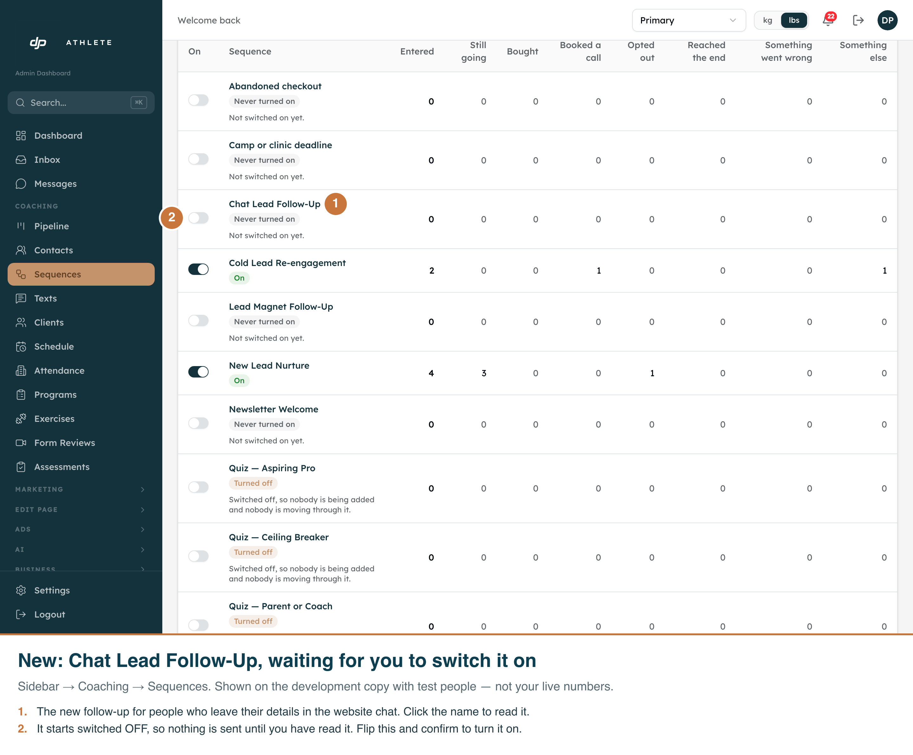
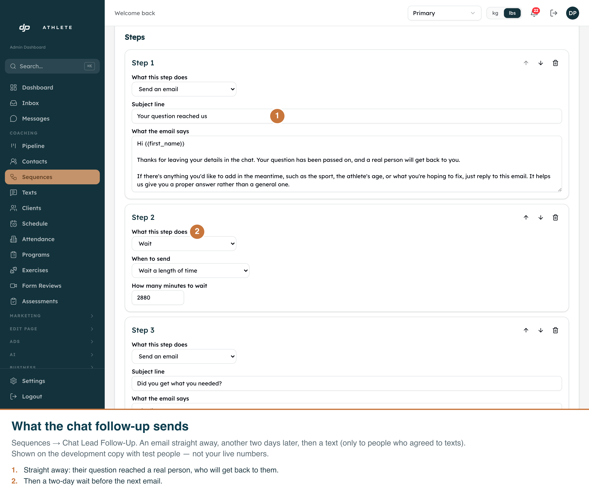
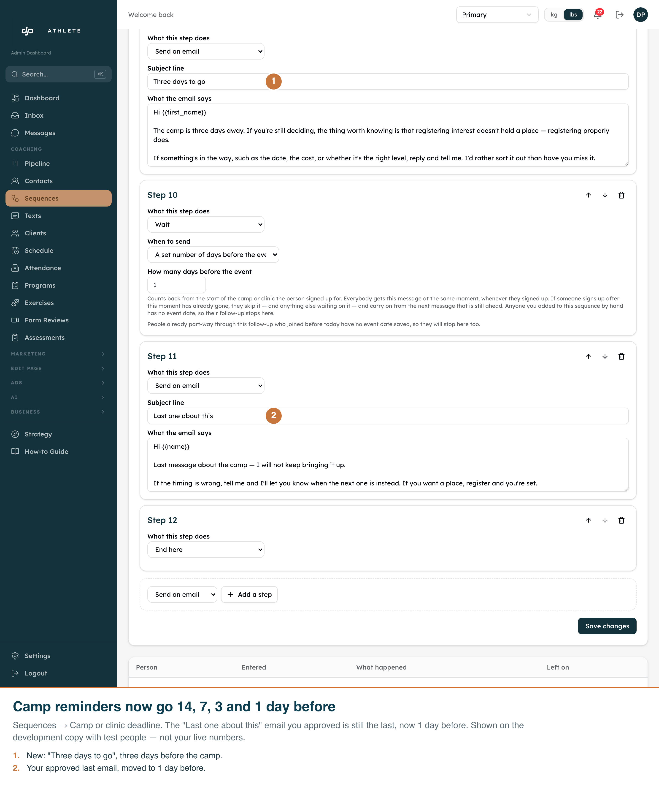
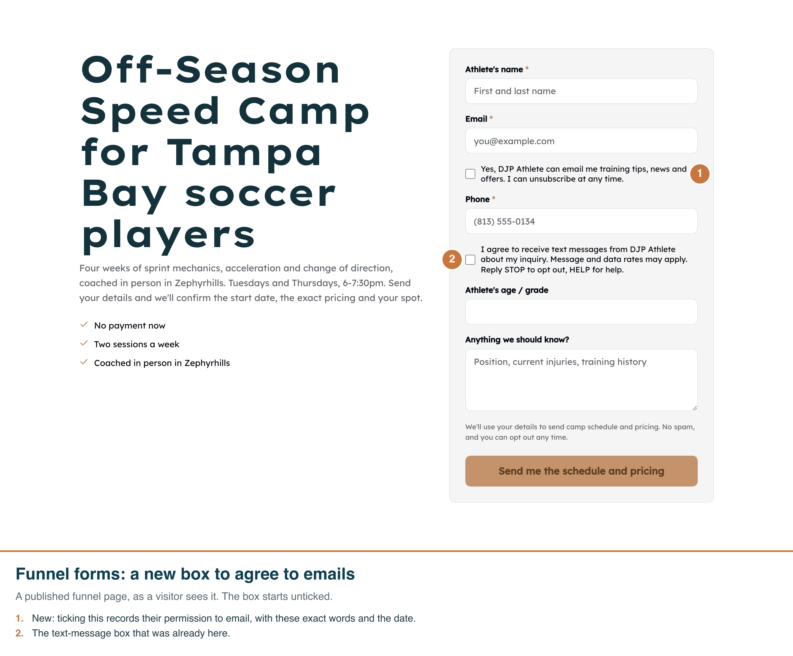
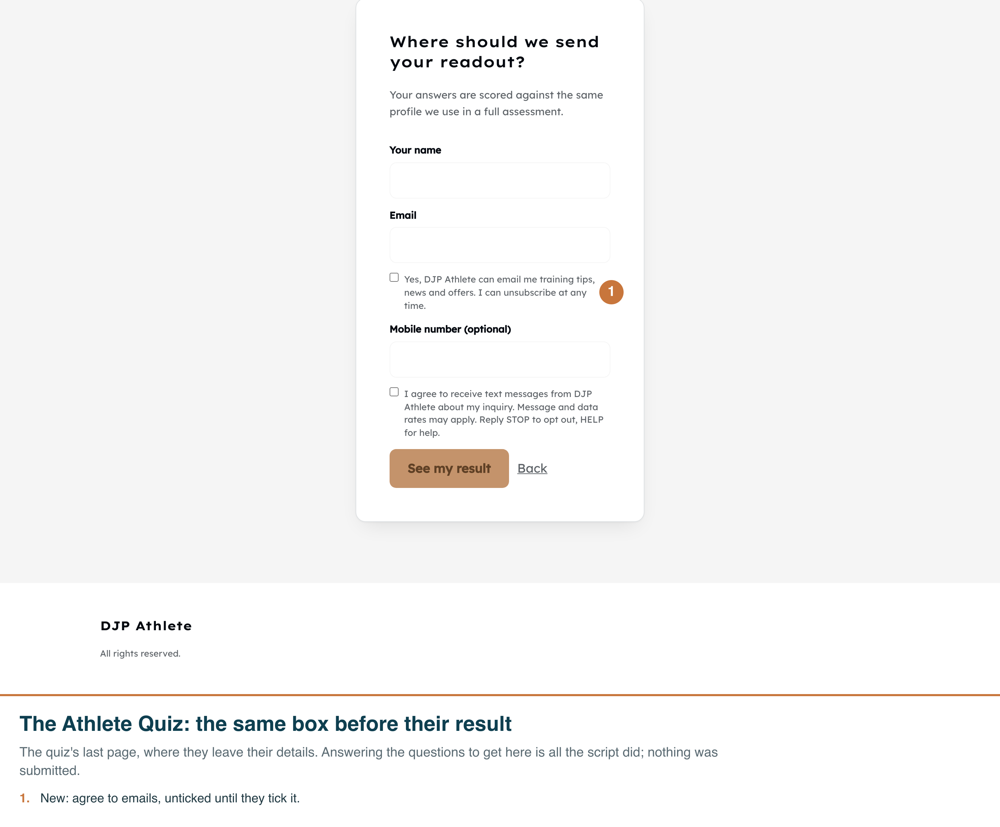
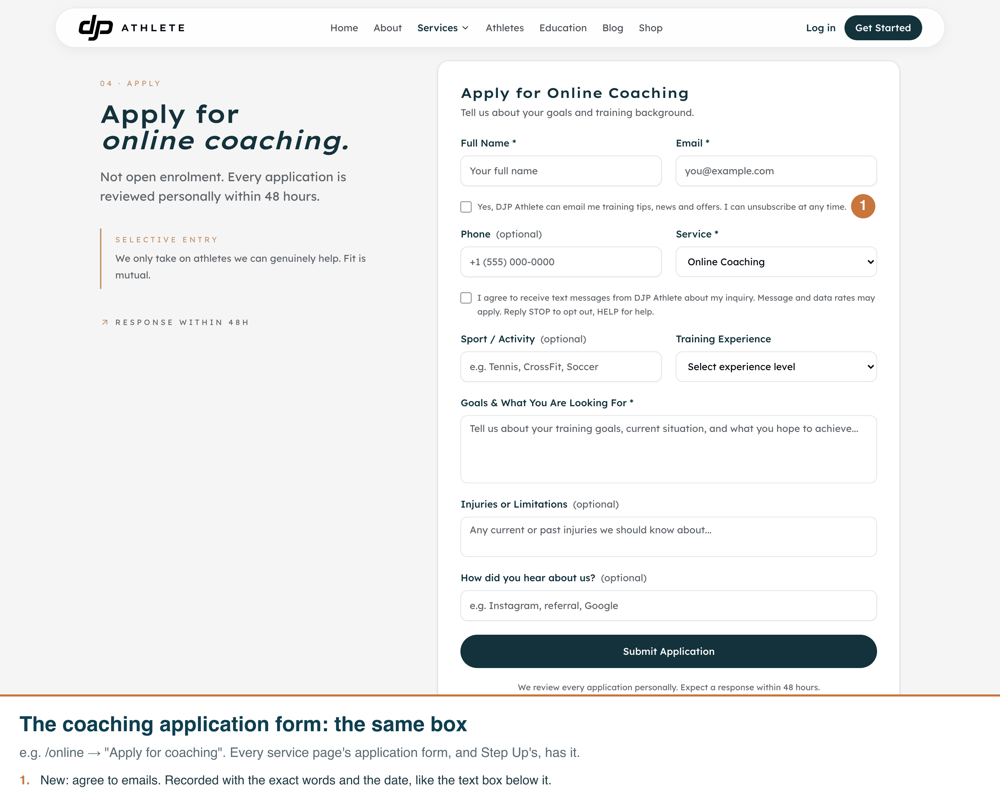
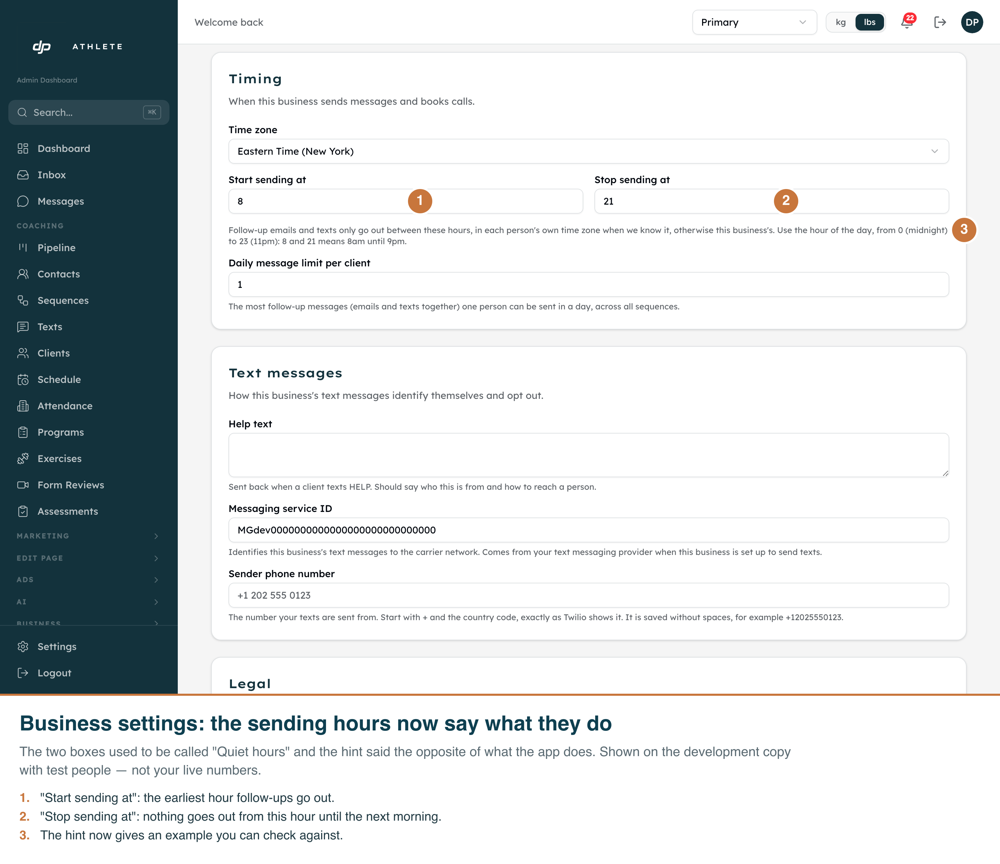
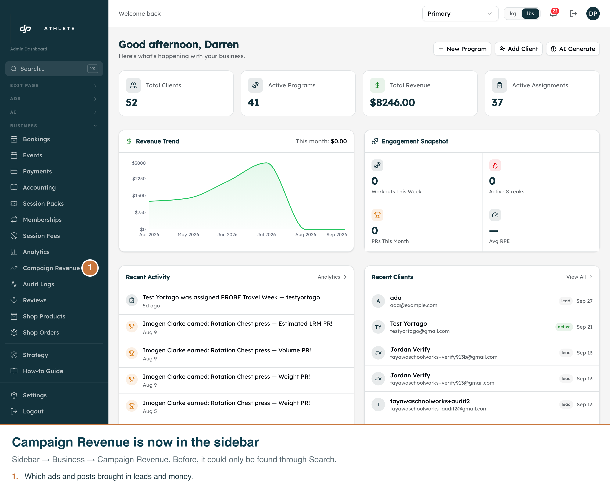
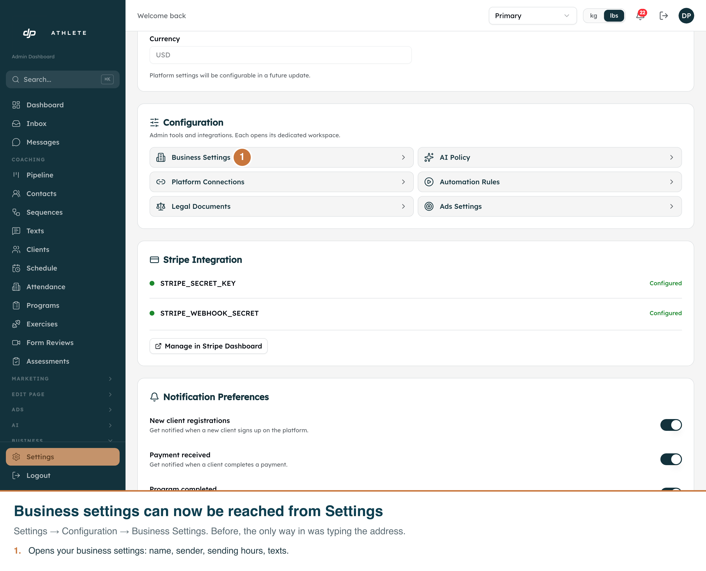

What changed after your answers of 27 September
Each picture is the real screen with numbered notes burned in. Built on a branch; nothing here is on your live site until you say "merge".
1. A follow-up for people who leave their details in the chat
You now get an email the moment someone leaves their details in the website chat, with their email and phone. The new follow-up sends them an email straight away, another two days later, then a text (only if they agreed to texts). It starts switched off. After the merge, read it and switch it on at Sequences → Chat Lead Follow-Up.


2. Camp reminders: 14, 7, 3 and 1 day before
Your approved "Last one about this" email is still the last one, now 1 day before. A new "Three days to go" email fills the 3-day slot. Please read it.

3. A box to agree to emails, on three forms
Funnel forms, the Athlete Quiz and the coaching application form now have an unticked "Yes, … can email me" box beside the email field. Ticking it records their permission with the exact words and the date. Emails still go out either way.



4. The application auto-reply books into your Calendly
The "Schedule Your Consultation" button in the automatic reply now opens your own Calendly page, with their name and email filled in. If a business has no calendar connected, the button is left out and they are asked to reply instead. (No screenshot: it is an email. It is covered by tests.)
5. Small fixes


